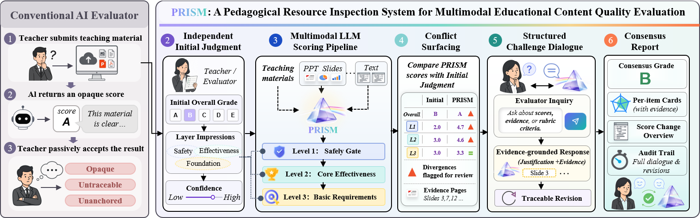

Zhangze Chen1, Jia Zhu1*, Chen Fang1, Shimin Di2, Pasquale De Meo3
1Zhejiang Normal University · 2Southeast University · 3University of Messina
*Corresponding author

We present PRISM (Pedagogical Resource Inspection System for Multimodal content), an interactive system for evaluating AI-generated and teacher-created multimodal educational resources. PRISM grounds evaluation in a validated 24-indicator three-layer non-compensatory rubric: a safety gate (L1) with veto authority, a core effectiveness layer (L2) yielding a five-tier grade (A to E), and a diagnostic layer (L3). A multimodal LLM jointly processes slide images and text with page-level evidence. Beyond "show-and-accept" scoring, PRISM supports traceable human–AI challenge and revision. Evaluators record an independent initial judgment before AI scores are revealed and may contest any score through traceable dialogue.
A safety failure cannot be offset by pedagogical strengths — any L1 score ≤ 2 triggers an immediate "prohibited from use" verdict.
Grounded in Merrill's First Principles, Mayer's CTML, ICAP, and UNESCO AI-in-education guidelines; validated through a Modified Delphi study with 15 domain experts.
Every revision must cite a specific slide page and rubric anchor. Both original AI score and user-final score are preserved for traceable audit.
The LLM scoring engine receives both slide images and text per layer, enabling judgments on image-text consistency and media quality that text-only systems miss.
No registration required. Hosted on a research server.
PRISM-DEMO
To help reviewers explore PRISM in a few minutes, we provide three sample slide decks of varying quality and content. Upload any of them to the live demo to see how PRISM scores each - and to experience the challenge dialogue on scores you disagree with.
A natural-science slide deck for primary education. A good starting point for walking through the full five-stage workflow.
↓ Download PDF (3.1 MB)A natural-science deck with several issues worth noticing. Useful for seeing how PRISM treats materials that do not pass review unchanged.
↓ Download PDF (1.7 MB)A primary-education science deck with mixed quality. Useful for exercising the challenge dialogue on indicators where reasonable evaluators may disagree.
↓ Download PDF (2.6 MB)
💡 We deliberately don't pre-announce what PRISM will find on each deck - that's the experiment. Use the access code PRISM-DEMO to enter the live system. Note: parsing larger uploaded files may take a little longer; if upload or parsing fails, please contact the authors.
Veto layer. Covers factual accuracy, ethics, privacy, link safety, citation verifiability, AI-authorship disclosure.
Any score ≤ 2 ⇒ "Prohibited from use", regardless of L2/L3.
Instructional design and content quality. Teaching aims, content coverage, learning activities, cognitive design, assessment.
Determines grade A/B/C/D/E (mean thresholds: 4.5 / 3.5 / 2.5 / 1.5).
Technical quality, usability, compliance. Visual design, readability, media quality, metacognitive support.
Diagnostic only; does not affect the grade.
Pilot study with N = 12 educators (3 in-service teachers, 9 graduate students) on a curated 12-resource subset spanning all 5 quality tiers and 8 subject domains. Gold standard set by two parallel 4-expert panels.
The challenge mechanism shows a layer-dependent calibration pattern: L3 design revisions are uniformly corrective (all 7/7 moved closer to expert gold), while L2 pedagogical revisions skew toward user over-strictness (9/12 moved farther) — suggesting precisely where human override is reliable and where AI calibration may be needed.
We acknowledge the support of the "Pioneer" and "Leading Goose" R&D Program of Zhejiang (No. 2026C02A1236) and the National Natural Science Foundation of China (No. 62577050).